Tonal Harmony
Elements of Pitch
Molloy College – Sam Wells
Harmony in Western Music
This course (and the following two semesters) focus on Tonal Harmony in Western Art Music.
What is Harmony? – the sound that results when two or more pitches are performed simultaneously. It is the vertical aspect of music, produced by the combination of multiple musical lines.
What is Western Art Music? – in short, the written musical tradition of European Classical Music. We study this tradition because it is a major influence on most musical genres we currently practice.
Harmony in Western Music
Much of today's popular music is base on tonal harmony, just as Bach's music was.
Both employ:
- A tonal center – a pitch class that provides a center of gravity
- Major and minor scales (almost exclusively)
- Tertian chords – built of thirds
- Functional Harmony – chords within in a key relate to each other in various ways and act (or function) predictably
Harmony in Western Music
Tonal Harmony – refers to music with a tonal center, based on major and/or minor scales, and using tertian chords that are related to one another and to the tonal center in various ways.
The Keyboard and Octave Registers
- Pitch
- Refers to the highness or lowness of a sound
- Pitches are named using the first seven letters of the alphabet A, B, C, D, E, F, & G
- From any note to the next note of the same name is called an octave
- All pitches from one C up to, but not including, the next C are in the same octave register and have the same number following their pitch name. The number indicates the octave register.
The Keyboard and Octave Registers
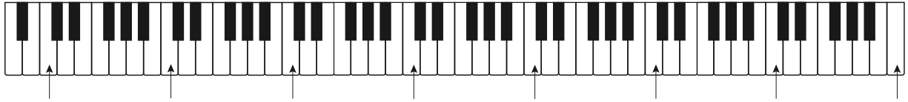 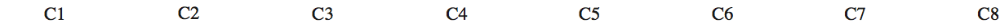
Notation on the Staff
| 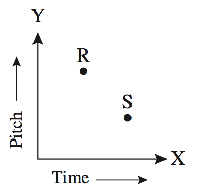 | ||
|
||
|
|
|
Notation on the Staff
|
||
|
||
| "G" Clef | "F" Clef | "C" Clef |
| 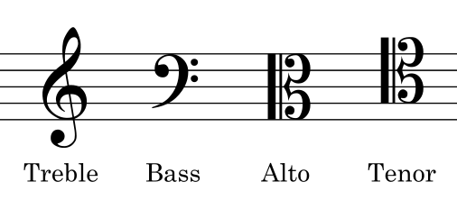 | ||
Notation on the Staff
The grand staff is a combination of two staves joined by a brace, with the top and bot- tom staves using treble and bass clefs, respectively.
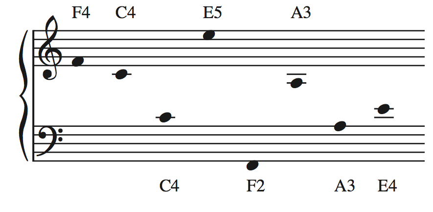J.S. Bach, Keyboard Partita no. 4 in D Major, BWV 828, Ouverture
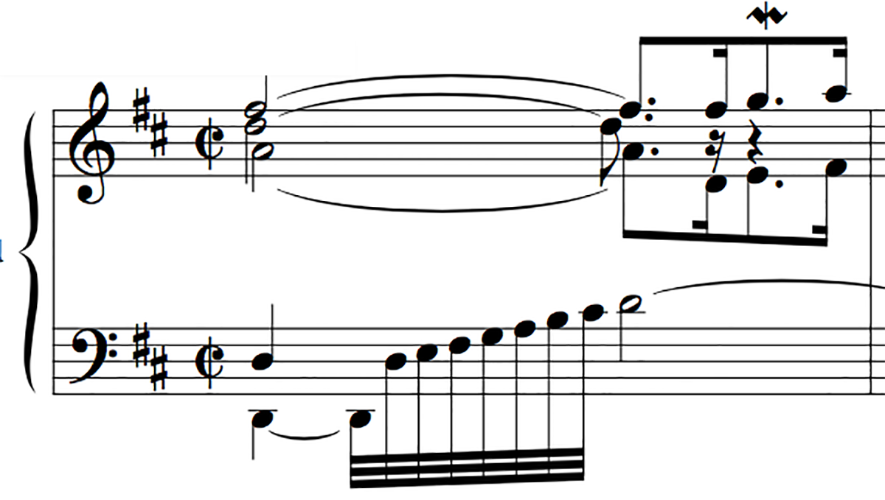Notation on the Staff
There are a ton more clefs. Here are a bunch more. You only need to be familiar with the four previously mentioned (treble, alto, tenor, bass).

Scales
Scale – a specific set of musical notes ordered by pitch
- Ordered by increasing pitch = ascending scale
- Ordered by decreasing pitch = descending scale
A scale can be made up of any pitches, but we will focus on major and minor scales.
These two scales form the basis of tonal harmony.
Scales
- Major and minor scales are specific patterns of whole steps and half steps
- Half Step (h): the smallest musical interval
- The distance from one key on the piano to the very next key
- Whole Step (w): equal two half-steps
- The next to smallest musical interval
- Major Scale: w w h w w w h
- We find this pattern on the white keys of the piano when starting on C
Major Scales
- You can see from this diagram that half steps in the major scale occur only between scale degrees 3̂ and 4̂ and 7̂ and 1̂.
- Notice also that the major scale can be thought of as two identical, four-note patterns separated by a whole step. Tetrachords. 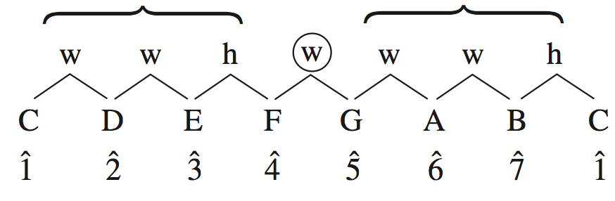
Accidentals
- What happens if we start on G on ascending with only the white keys on the piano to the next G?
- Do we have a major scale?
- NO!!!!
- We need to alter (raise/lower) a pitch to make sure our interval pattern stays the same.
Accidentals
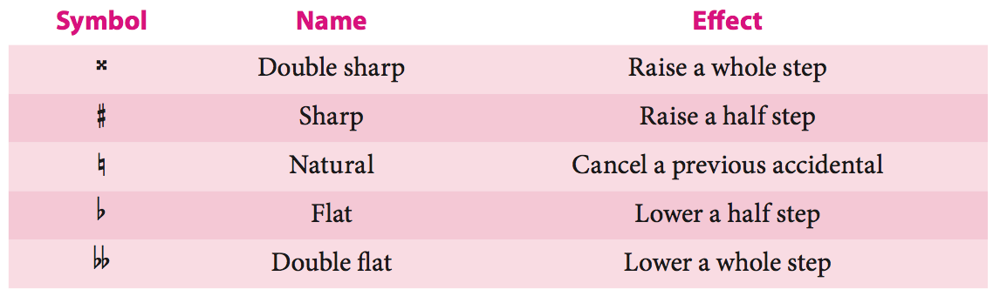Key Signaturess
- Each major scale has an associated key signature that indicates the accidentals required to produce the correct pattern of notes starting on 1̂.
- Key signature: a pattern of sharps or flats that appears at the beginning of a staff and indicates that certain notes are to be consistently raised or lowered.
Sharp Key Signatures
- There are seven major keys with sharps in the key signature: 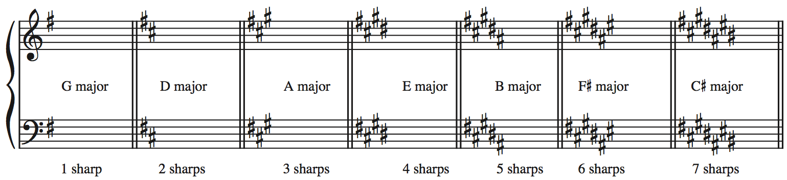
- Notice that as we add sharps we also retain the sharps
- F C G D A E B
- We call this the “order of sharps”
Flat Key Signatures
- There are seven major keys with flats in the key signature: 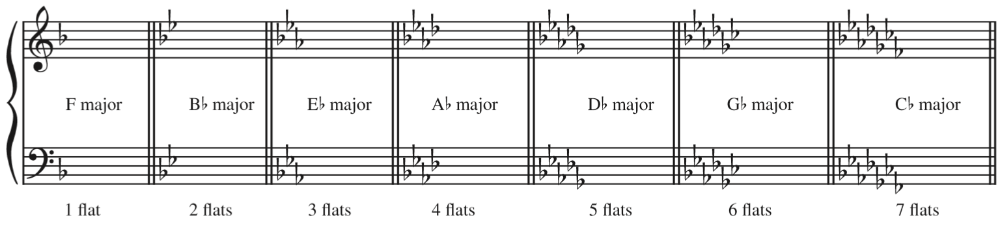
- Notice that as we add sharps we also retain the flats
- B E A D G C F
- We call this the “order of flats”
Circle of Fifths
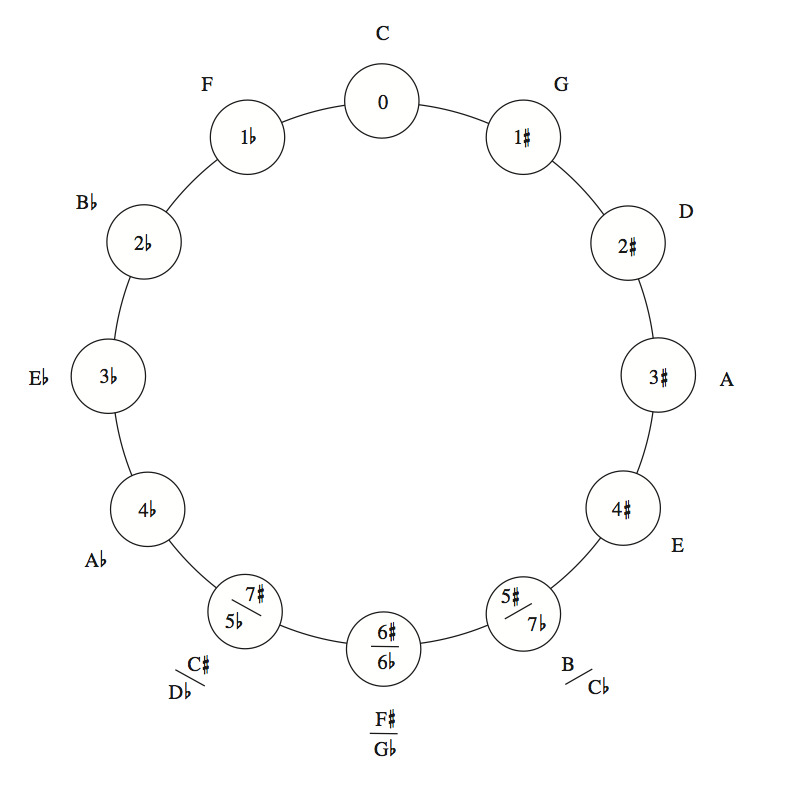- Reading clockwise: you will see that each new key begins on 5̂ of the previous key.
- Counterclockwise: each new key begins on 4̂ of the previous one.
- To get a key a fifth above, add a sharp (remove a flat)
More Scales: The Minors
- The are three minor scale patterns all musicians need to know.
- Natural Minor
- Harmonic Minor
- Melodic Minor
Natural Minor
Natural Minor: like a major scale with lowered 3̂, 6̂, and 7̂
w h w w h w w
Harmonic Minor
Harmonic Minor: Natural minor scale with a raised 7̂
w h w w +2 w h
Melodic Minor
Melodic Minor: has an ascending form and a descending form
The ascending form is like natural minor with a raised 6̂ and 7̂ or as Major with lowered 3̂.
w h w w w w h
The descending form is identical to the natural minor
Minor Scales
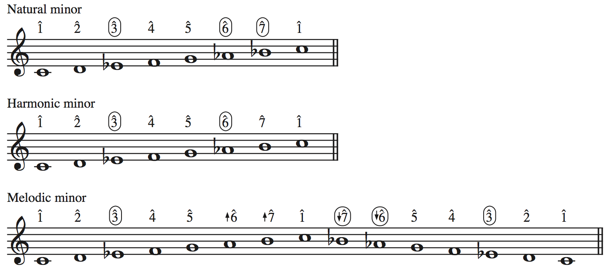Scales & You
- You need to:
- Know all major scales in every key!
- Know all minor scales in every key! (All three kinds!!)
- Be able to immediately recognize any major or minor scale
- Luckily for you, the internet has anything you would ever need!
Minor Key Signatures
- Minor key signatures conform to the natural minor scale, no matter which minor scale type is actually in use.
- Let’s look at f♯ minor
- Which accidentals a required to make f♯ minor?
- F♯, C♯, G♯
- Which major key signature has these accidentals?
- A major
Minor Key Signatures
- f♯ minor and A Major are relative keys because they share the same key signature.
- The relative major of any minor key starts on 3̂ of the minor scale
- The relative minor of any major key begins on 6̂ of the major scale.
- Major and minor scales that share 1̂ are parallel keys
- Ex. F♯ Major and f♯ minor
Key Relationships
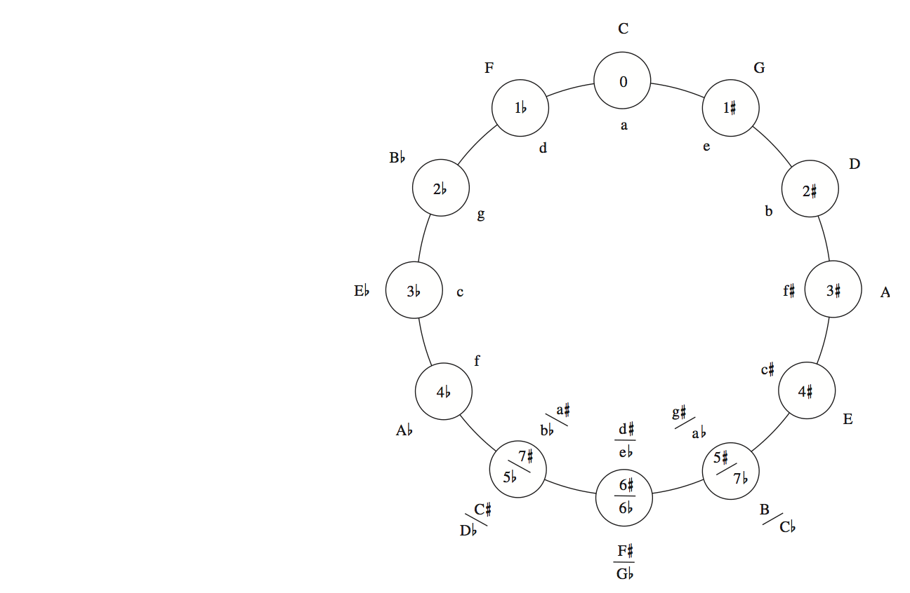Key Signatures & You
- You need to:
- memorize all key signatures.
- memorize the order of flats
- memorize the order of sharps
- Be able to write all key signatures on all clefs
- Be able to immediately recognize all key signatures
- Know all of your key relationships.
- Luckily for you, the internet has anything you would ever need!
Scale Degree Names


Intervals
- Interval: the measurement of the distance in pitch between two notes.
- Harmonic Interval: results when two notes sound simultaneously.
- Melodic Interval: occurs when two notes are played successively
- There are two parts to every interval name: the numerical name and the modifier that precedes it
- the numerical name is a measurement of how far apart the notes are vertically on the staff, regardless of what accidentals are involved
Intervals
- There are two parts to every interval name: the numerical name and the modifier that precedes it
- the numerical name is a measurement of how far apart the notes are vertically on the staff, regardless of what accidentals are involved
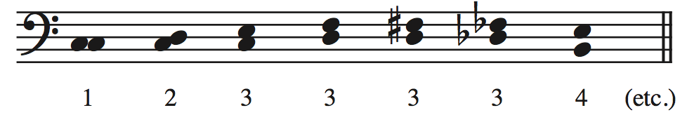
Intervals
| Numerical Intervals | |
|---|---|
|
Simple Intervals |
|
|
|
Compound Intervals |
Interval Modifiers
Perfect: Refers to Unisons, 4ths, 5ths, 8ves, and their compounds (ex. 11ths)
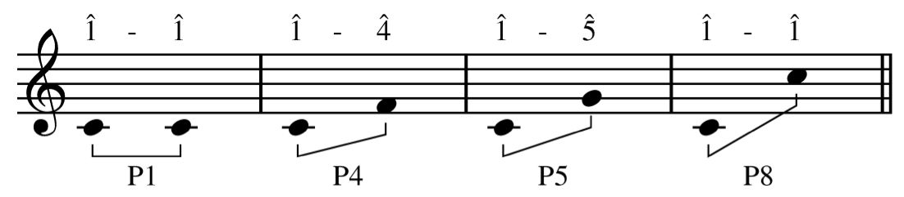Interval Modifiers
Major/minor: Only used in conjunction with 2nds, 3rds, 6ths, and 7ths
- The intervals formed by 1̂–2̂, 1̂–3̂, 1̂–6̂, and 1̂–7̂ in the major scale are all major intervals
- If we lessen a major interval by a half-step it becomes a minor interval
Interval Modifiers
Augmented: A perfect or a major interval that is made a half step larger without changing the numerical name (abbreviated +)
Diminished: a perfect or a minor interval is made a half step smaller without changing its numerical name (abbreviated °)

More on Intervals
- There is no such thing as a diminished unison.
- Why?
- Doubly augmented and doubly diminished intervals are possible, but they seldom occur.
- Let’s make an example of a doubly augmented 3rd
- Tritone is a term used for the +4 or its enharmonic equivalent, the °5.
- Enharmonic: something that sounds the same but is spelled differently
- Notes: E and F♭
- Keys: C♯ Major and D♭ Major
- Intervals: °4 and M3
More on Intervals
- We can invert simple intervals
- Transpose one the notes by an octave to reverse the verticle order of the notes.
- When we invert simple intervals 2 things predictably happen:
- If we subtract the starting numeric name from 9 we get the ending numeric name
- A 2nd becomes a 7th and vice versa
- A 3rd becomes a 6th and vice versa
- A 4th becomes a 5th and vice versa
- The modifier also inverts (except for perfect intervals)
- Major becomes minor, and vice versa
- Augmented becomes diminished and vice versa
Consonant and Dissonant Harmonic Intervals
- consonant and dissonant can be defined roughly as meaning pleasing to the ear and not pleasing to the ear, respectively
- For now the following will suffice
- Consonant
- major and minor 3rds and 6ths and perfect 5ths and 8ves
- Dissonant
- All other harmonic intervals, including all augmented and diminished intervals, are dissonant. An exception is the P4, which is considered dissonant in tonal music only when it occurs above the lowest voice
- This is based of off what composers of tonal music (1650-1900) traditionally wrote, our modern ears are accustomed to a much wider range of consonance
Intervals & You
- You need to:
- Know all possible intervals
- Be able to immediately recognize any intervals
- Even the crazy ones!
- Luckily for you, the internet has anything you would ever need!